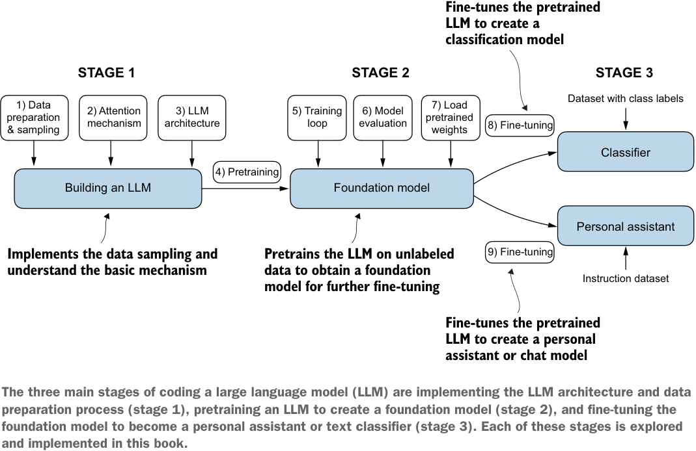

BUILD A
Sebastian Raschka
M A N N I N G

The three main stages of coding a large language model (LLM) are implementing the LLM architecture and data preparation process (stage 1), pretraining an LLM to create a foundation model (stage 2), and fine-tuning the foundation model to become a personal assistant or text classifier (stage 3). Each of these stages is explored and implemented in this book.
Build a Large Language Model (From Scratch)
Build a Large
Language Model
(From Scratch)
SEBASTIAN RASCHKA
M A N N I N G
SHELTER ISLAND
For online information and ordering of this and other Manning books, please visit
www.manning.com. The publisher offers discounts on this book when ordered in quantity.
For more information, please contact
Special Sales Department
Manning Publications Co.
20 Baldwin Road
PO Box 761
Shelter Island, NY 11964
Email: orders@manning.com
©2025 by Manning Publications Co. All rights reserved.
No part of this publication may be reproduced, stored in a retrieval system, or transmitted, in
any form or by means electronic, mechanical, photocopying, or otherwise, without prior written
permission of the publisher.
Many of the designations used by manufacturers and sellers to distinguish their products are
claimed as trademarks. Where those designations appear in the book, and Manning Publications
was aware of a trademark claim, the designations have been printed in initial caps or all caps.
Recognizing the importance of preserving what has been written, it is Manning’s policy to have
the books we publish printed on acid-free paper, and we exert our best efforts to that end.
Recognizing also our responsibility to conserve the resources of our planet, Manning books
are printed on paper that is at least 15 percent recycled and processed without the use of
elemental chlorine.
The authors and publisher have made every effort to ensure that the information in this book
was correct at press time. The authors and publisher do not assume and hereby disclaim any
liability to any party for any loss, damage, or disruption caused by errors or omissions, whether
such errors or omissions result from negligence, accident, or any other cause, or from any usage
of the information herein.
Manning Publications Co.
Development editor: Dustin Archibald
20 Baldwin Road
Technical editor: David Caswell
PO Box 761
Review editor: Kishor Rit
Shelter Island, NY 11964
Production editor: Aleksandar Dragosavljevic´
Copy editors: Kari Lucke and Alisa Larson
Proofreader: Mike Beady
Technical proofreader: Jerry Kuch
Typesetter: Dennis Dalinnik
Cover designer: Marija Tudor
ISBN: 9781633437166
Printed in the United States of America
由 pdf2html2.py 从 bllm2.pdf 转换。插图为原书矢量图按区域渲染的截图，代码块带语法高亮，连字符断词已按全书词表还原。